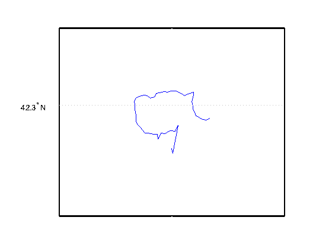
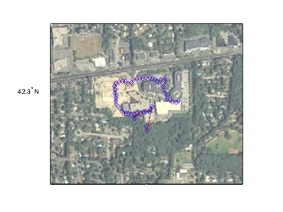
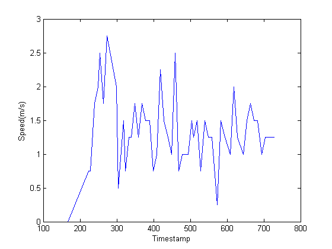

Capturing and Mapping GPS Example
Contents
- Capturing and mapping GPS data
- Creation of the object
- View the most recent values collected
- Collect data for a period of time
- Obtain the location coordinates
- Filter out erroneous positions
- Plot the coordinates in a figure window
- Plot the points on a satellite image from the USGS national map
- Plot the speed
- Calculate various distances
- Cleanup
Capturing and mapping GPS data
This example shows how to collect and then display latitude and longitude data on a satellite map image.
Creation of the object
In this example, we will create an object for an Android device.
% Create the object obj = sensorgroup('AndroidMobile') %#ok<NOPTS>
obj =
sensorgroup logging data from Android device on port 50000
Measurements: (showLatestValues)
Acceleration Orientation
Latitude Speed
Longitude
Altitude MagneticField
View the most recent values collected
To collect some data first, we will pause for a few minutes to allow for some travel time.
minutes = 5; seconds = minutes * 60; pause(seconds)
To view the latest collected measurements, we will call the showLatestValues method.
showLatestValues(obj)
Measurement Latest Values Units Log Size ------------- ---------------------------------- ------- -------- Acceleration 12.38 4.80 2.66 m/s^2 <1667x3> Latitude 42.30 degrees <12x1> Longitude -71.35 degrees <12x1> Altitude 40.80 m <12x1> Speed 2.00 m/s <12x1> Waiting for: MagneticField, and Orientation. More information.
We can also view the values individually.
latitude = obj.Latitude longitude = obj.Longitude altitude = obj.Altitude
latitude = 42.2988 longitude = -71.3514 altitude = 40.8000
It is important to keep in mind that a packet could have come arrived between each of those three lines of code above though, and that they may not all represent the same position in time. To ensure the values are syncronized, we need to look at the logged values, using the methods of the object. Let's continue and map the logged values.
Collect data for a period of time
To collect enough data to map, we will pause for a few more minutes to allow for travel time.
minutes = 8; seconds = minutes * 60; pause(seconds)
Obtain the location coordinates
[lat, lon, sp, ~, ~, t, llacc, ~] = poslog(obj);
Filter out erroneous positions
Keep only the latitude and longitude where the horizontal accuracy is less than one standard deviation of the horizontal accuracy.
goodIndices = llacc < std(llacc); lat = lat(goodIndices); lon = lon(goodIndices); sp = sp(goodIndices); t = t(goodIndices); llacc = llacc(goodIndices);
Plot the coordinates in a figure window
Compute latlim and lonlim with a .05 buffer.
[latlim, lonlim] = geoquadpt(lat, lon);
[latlim, lonlim] = bufgeoquad(latlim, lonlim, (max(lat) - min(lat)), ...
(max(lon) - min(lon)));
Create a map of the points.
figure; usamap(latlim, lonlim) geoshow(lat, lon, 'DisplayType', 'line')
Plot the points on a satellite image from the USGS national map
The USGS National Map provides ortho-imagery over the United States.
info = wmsinfo('http://raster.nationalmap.gov/arcgis/services/Orthoimagery/SDDS_Imagery/MapServer/WMSServer');
layer = info.Layer(1);
Obtain a base map from the server for the region of interest.
[A, R] = wmsread(layer, 'Latlim', latlim, 'Lonlim', lonlim);
Plot the points on the base map.
figure usamap(A,R) geoshow(A,R) geoshow(lat, lon, 'DisplayType', 'line', 'Color', 'red', ... 'Marker', 'diamond', 'MarkerEdgeColor', 'blue');
Plot the speed
Plot the speed vs. time.
figure; plot(t, sp); xlabel('Timestamp') ylabel('Speed(m/s)')
Calculate various distances
Calculate the mean distances between points.
% Coordinates are from a GPS and referenced to WGS84 ellipsoid. WGS84 major % axis is in units of meters. e = wgs84Ellipsoid; % Compute distance from point-to-point. dist is in units of meters. dist = distance(lat(1:end-1), lon(1:end-1), lat(2:end), lon(2:end), e); % Remove any NaN values. dist(isnan(dist)) = []; % Mean value. meanDistanceBetweenPoints = mean(dist)
meanDistanceBetweenPoints = 17.0444
Calculate the total distance traveled.
% Total distance traveled.
totalDistanceTraveled = sum(dist)
totalDistanceTraveled = 869.2621
Cleanup
When you are done, the object should be deleted to free up the resources occupied by the object.
delete(obj)